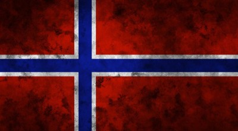

Norway
 Норвегия располагается на северо-западе Скандинавского полуострова и представляет собой протянувшуюся вдоль берега полоску суши, изрезанную фьордами — узкими и извилистыми заливами со скалистыми склонами. Административно страна делится на 19 регионов (фюльке), которые неофициально принято объединять в пять больших областей: Северная, Южная, Западная, Восточная и Центральная Норвегия. Крупнейшими городами после Осло являются Берген, Ставангер, Тронхейм, Нарвик и Флом.
Интересно отметить, что официальный норвежский язык существует в двух различных вариантах (букмол и нюнорск), что порой может затруднять общение с местным населением на их родном языке. В некоторых районах Северной Норвегии официальный статус присвоен не только норвежскому, но и саамскому языку, на котором говорят саамы — наиболее многочисленное (после арабов) этническое меньшинство страны. Тем не менее жители Норвегии в большинстве своем владеют английским на достаточно хорошем уровне; широкое распространение здесь имеет и датский язык.
Климат и погода
Пожалуй, одним из самых «живучих» мифов о Норвегии можно заслуженно назвать распространенное среди иностранцев
представление о суровом и холодном климате страны, что не соответствует действительности, ведь берега страны
омывает всем известный Гольфстрим — теплое атлантическое течение. В действительности, климат на большей части
территории Норвегии может быть охарактеризован как умеренный морской, а средняя температура здесь составляет +8…+15 °С
летом и до –10 °С в холодное время года. Только на самом севере Скандинавского полуострова царит субарктический климат
с зимними заморозками до –25 °С.
Природа
Природные красоты Норвегии останутся в памяти единожды увидевшего их человека раз и навсегда. Бурлящие воды порожистых рек и кристальная чистота озер, густые темные леса, покрывающие почти третью часть территории страны, и, конечно же, срывающиеся в море скалистые обрывы покорят каждого, кто способен тонко чувствовать прекрасное в окружающем нас мире.
Норвегия
Удивительное место для удивительного и запоминающегося отдыха...
 Защищено АО «Лаборатория Касперского», 2017
Защищено АО «Лаборатория Касперского», 2017